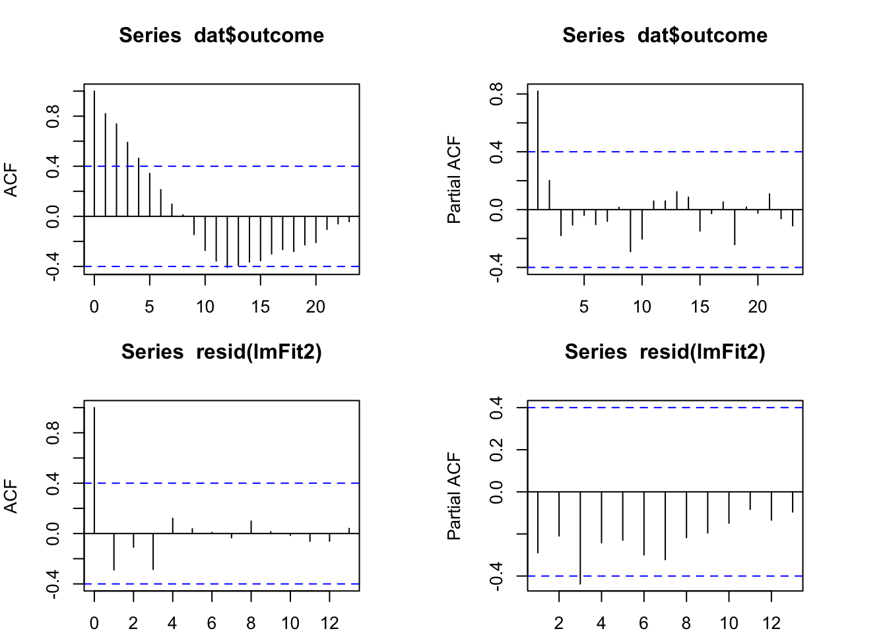
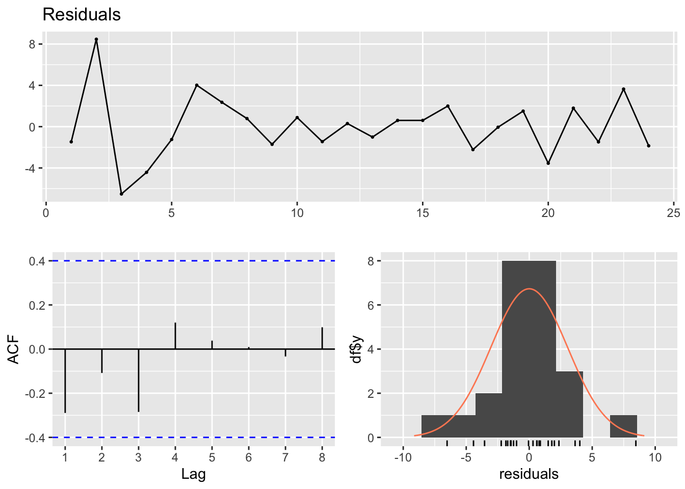

Chapter 8 Interupted Time Series (ITS) (1)
- In this lab, we will see how to use Segmented Regression to analyze ITS data.
- Source: “Global Health Research: Design + Methods”. By Dr. Eric Green
Install and load the following packages:
library(ggplot2)
library(forecast)
library(sandwich)
library(lmtest)8.1 Data
Generating sample data:
dat <- data.frame(month=seq(from=1, to=24), post=c(rep(0, 12), rep(1, 12)),
monthpost=c(rep(0, 12), seq(from=1, to=12)),
outcome=c(50, 60, 45, 47, 50, 55, 53, 51, 48, 50, 47, 48,
55, 60, 63, 67, 65, 69, 72, 68, 74, 71, 76, 70))
head(dat)## month post monthpost outcome
## 1 1 0 0 50
## 2 2 0 0 60
## 3 3 0 0 45
## 4 4 0 0 47
## 5 5 0 0 50
## 6 6 0 0 558.2 OLS Segmented Regression
lmFit1 <- lm(outcome ~ month + post + monthpost, data=dat)
summary(lmFit1)##
## Call:
## lm(formula = outcome ~ month + post + monthpost, data = dat)
##
## Residuals:
## Min 1Q Median 3Q Max
## -6.5326 -1.6935 -0.3939 2.3747 8.1247
##
## Coefficients:
## Estimate Std. Error t value Pr(>|t|)
## (Intercept) 52.5606 2.2450 23.412 5.24e-16 ***
## month -0.3427 0.3050 -1.123 0.274605
## post 9.6876 2.9940 3.236 0.004144 **
## monthpost 1.7832 0.4314 4.134 0.000515 ***
## ---
## Signif. codes: 0 '***' 0.001 '**' 0.01 '*' 0.05 '.' 0.1 ' ' 1
##
## Residual standard error: 3.648 on 20 degrees of freedom
## Multiple R-squared: 0.8867, Adjusted R-squared: 0.8697
## F-statistic: 52.15 on 3 and 20 DF, p-value: 1.227e-09- change in intercept: b2 = 9.6876 p = 0.004144 **
- change in slope: b3 = 1.7832 p = 0.000515 ***
8.3 OLS Segmented Regression with Polynomial term
outcome=Time+Time^{2} +Treat+delta_Time+delta_Time^{2}
lmFit2 <- lm(outcome ~ month + I(month^2) + post + monthpost + I(monthpost^2), data=dat)
summary(lmFit2)##
## Call:
## lm(formula = outcome ~ month + I(month^2) + post + monthpost +
## I(monthpost^2), data = dat)
##
## Residuals:
## Min 1Q Median 3Q Max
## -6.5190 -1.5350 0.1249 1.5789 8.4660
##
## Coefficients:
## Estimate Std. Error t value Pr(>|t|)
## (Intercept) 51.31818 3.55724 14.426 2.47e-11 ***
## month 0.18981 1.25812 0.151 0.88176
## I(month^2) -0.04096 0.09421 -0.435 0.66891
## post 4.52947 4.37383 1.036 0.31411
## monthpost 4.76623 1.65520 2.880 0.00998 **
## I(monthpost^2) -0.15385 0.13324 -1.155 0.26332
## ---
## Signif. codes: 0 '***' 0.001 '**' 0.01 '*' 0.05 '.' 0.1 ' ' 1
##
## Residual standard error: 3.442 on 18 degrees of freedom
## Multiple R-squared: 0.9092, Adjusted R-squared: 0.884
## F-statistic: 36.04 on 5 and 18 DF, p-value: 9.126e-09- change in intercept: b3 = 4.52947 p = 0.31411 **
- change in slope: b4 = 4.76623 p = 0.00998 **
- change in slope^2: b5 = -0.15385 p = 0.26332
8.4 Autocorrelation
ACF and PACF of residuals:
par(mfrow=c(2,2), mar = c(2, 4, 4, 4))
acf(dat$outcome, lag.max = 23) # for Y
pacf(dat$outcome, lag.max = 23) # for Y
acf(resid(lmFit2)) # for e
pacf(resid(lmFit2)) # for e
checkresiduals(lmFit2)
##
## Breusch-Godfrey test for serial correlation of order up to 9
##
## data: Residuals
## LM test = 15.996, df = 9, p-value = 0.06696- the Breusch-Godfrey test for jointly testing up to 9th order autocorrelation.
- The residual plot shows some changing variation over time, but is not remarkable (p = 0.06696).
- The histogram shows that the residuals seem to be slightly skewed, which may also affect the standard errors of the residuals.
- The autocorrelation plot (ACF) shows no significant spike beyond the dashed blue line. Even up to lag 8, there is not quite enough evidence for the Breusch-Godfrey to be significant at the 5% level. The autocorrelations are not particularly large, and will be unlikely to have any noticeable impact on the forecasts or the prediction intervals.
- We are good with segmented regression…
- But for illustration purposes…
8.5 Segmented Regression with HAC correction for standard errors
8.5.1 OLS:
round(vcov(lmFit2), 2) # original## (Intercept) month I(month^2) post monthpost I(monthpost^2)
## (Intercept) 12.65 -4.04 0.27 -2.96 -2.42 -0.27
## month -4.04 1.58 -0.12 1.66 1.19 0.12
## I(month^2) 0.27 -0.12 0.01 -0.16 -0.10 -0.01
## post -2.96 1.66 -0.16 19.13 -1.79 0.43
## monthpost -2.42 1.19 -0.10 -1.79 2.74 -0.02
## I(monthpost^2) -0.27 0.12 -0.01 0.43 -0.02 0.02summary(lmFit2)##
## Call:
## lm(formula = outcome ~ month + I(month^2) + post + monthpost +
## I(monthpost^2), data = dat)
##
## Residuals:
## Min 1Q Median 3Q Max
## -6.5190 -1.5350 0.1249 1.5789 8.4660
##
## Coefficients:
## Estimate Std. Error t value Pr(>|t|)
## (Intercept) 51.31818 3.55724 14.426 2.47e-11 ***
## month 0.18981 1.25812 0.151 0.88176
## I(month^2) -0.04096 0.09421 -0.435 0.66891
## post 4.52947 4.37383 1.036 0.31411
## monthpost 4.76623 1.65520 2.880 0.00998 **
## I(monthpost^2) -0.15385 0.13324 -1.155 0.26332
## ---
## Signif. codes: 0 '***' 0.001 '**' 0.01 '*' 0.05 '.' 0.1 ' ' 1
##
## Residual standard error: 3.442 on 18 degrees of freedom
## Multiple R-squared: 0.9092, Adjusted R-squared: 0.884
## F-statistic: 36.04 on 5 and 18 DF, p-value: 9.126e-098.5.2 HAC:
round(vcovHAC(lmFit2), 2) # HAC corrected## (Intercept) month I(month^2) post monthpost I(monthpost^2)
## (Intercept) 9.81 -2.55 0.15 -0.65 -0.99 -0.15
## month -2.55 1.14 -0.08 0.87 0.84 0.08
## I(month^2) 0.15 -0.08 0.01 -0.08 -0.07 -0.01
## post -0.65 0.87 -0.08 2.26 0.66 0.10
## monthpost -0.99 0.84 -0.07 0.66 0.95 0.06
## I(monthpost^2) -0.15 0.08 -0.01 0.10 0.06 0.01coeftest(lmFit2, vcov = vcovHAC(lmFit2))##
## t test of coefficients:
##
## Estimate Std. Error t value Pr(>|t|)
## (Intercept) 51.318182 3.132281 16.3836 2.919e-12 ***
## month 0.189810 1.067497 0.1778 0.8608590
## I(month^2) -0.040959 0.079998 -0.5120 0.6148763
## post 4.529471 1.504238 3.0111 0.0075014 **
## monthpost 4.766234 0.974371 4.8916 0.0001175 ***
## I(monthpost^2) -0.153846 0.084921 -1.8116 0.0867621 .
## ---
## Signif. codes: 0 '***' 0.001 '**' 0.01 '*' 0.05 '.' 0.1 ' ' 1